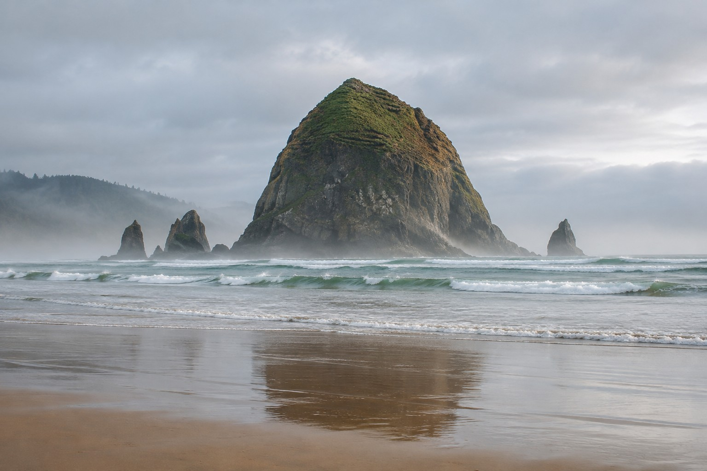
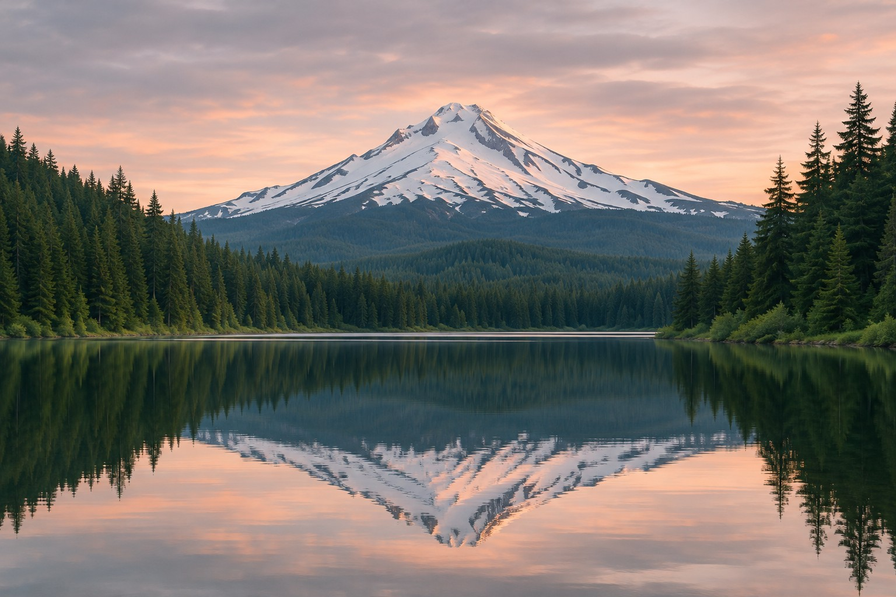

Waterfalls
Columbia River Gorge
Clifftop views and waterfall stops.
Three scenic drives out of Portland, from river bluffs to the Pacific coast.
Waterfalls
Clifftop views and waterfall stops.

Cannon Beach and Manzanita

Government Camp and Trillium Lake
Illustrative landscapes. Route diagrams show the order of stops.